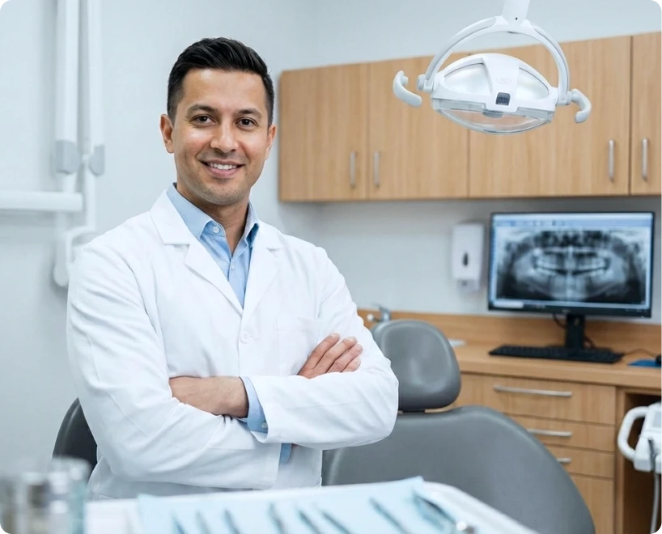

Responsável Dr. André Carvalho
Seu sorriso é a nossa motivação!
Cuidamos do seu sorriso com excelência e garantimos tratamentos odontológicos de alta qualidade.
Agende uma consulta
Tecnologia de ponta a serviço do seu sorriso
Utilizamos as mais avançadas tecnologias odontológicas para garantir tratamentos precisos e eficazes. Desde diagnósticos digitais até equipamentos de última geração.
Estamos comprometidos em oferecer o melhor cuidado para o seu sorriso. Venha experimentar a diferença que a inovação pode fazer na sua saúde bucal.
Agende sua consultaNossos Serviços
De cuidados preventivos a soluções avançadas, nossa equipe está pronta para atender todas as suas necessidades odontológicas. Escolha seu serviço abaixo.
Check-up Odontológico
Exames de rotina e avaliações gerais da saúde bucal.
Clareamento Dental
Procedimentos para branqueamento dos dentes, realçando o sorriso.
Ortodontia
Correção do alinhamento dos dentes e mordida com aparelhos fixos e móveis.
Implantes Dentários
Substituição de dentes perdidos com implantes de titânio.
Próteses Dentárias
Confeccionamento de próteses parciais e totais para reposição de dentes.
Tratamento de Canal
Tratamento endodôntico para salvar dentes com infecção ou danos na raiz.
Agende agora mesmo sua consulta
Não perca tempo! Agende sua consulta e comece a cuidar do seu sorriso hoje mesmo. Nossa equipe está pronta para receber você com atenção e dedicação.
Quero fazer uma avaliaçãoO que nossos pacientes dizem
A melhor clínica odontológica do Rio
Endereço
Av. Rio Branco, 185 - sala 308 - Centro, Rio de Janeiro - RJ, 20040-007
Horário de atendimento
- Seg a Sex: 9:00 às 17:00
- Sáb: 9:00 às 12:00